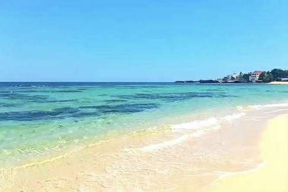
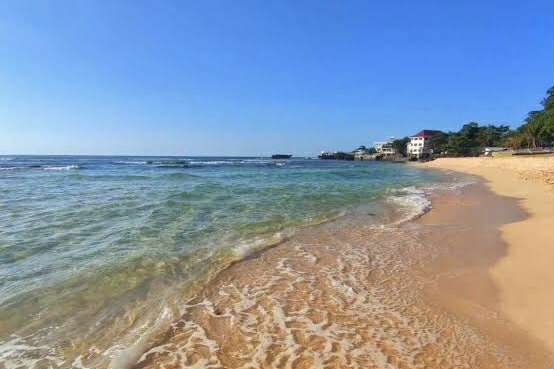
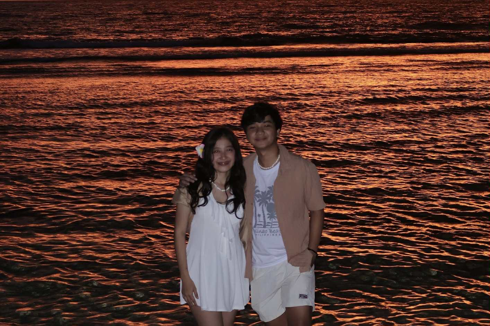

🏖 Patar Beach




Patar Beach is often called the “Boracay of the North” for its golden sands and clear blue waters. Located in Bolinao, it’s an ideal spot for swimming, sunset watching, and beach camping. The waves are gentle, and the scenery is breathtaking — a mix of raw beauty and coastal charm. Whether you’re relaxing or taking photos, Patar Beach offers a slice of paradise.